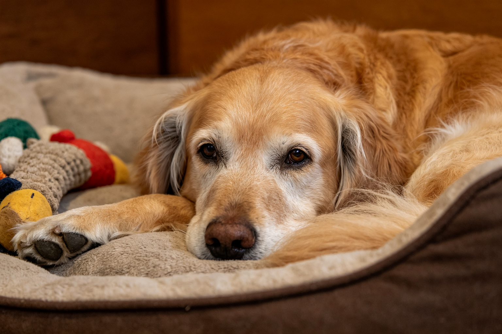
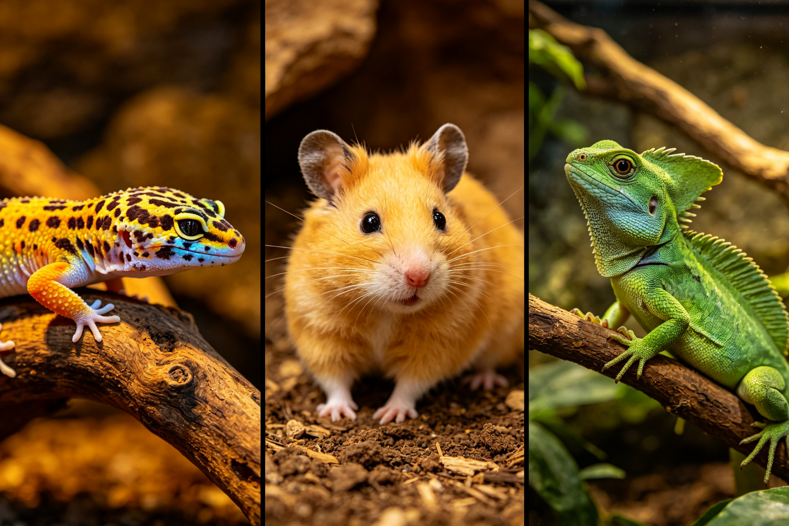
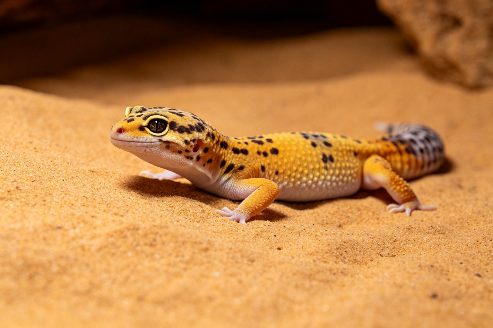

🐱 貓行為實驗室
用攝影機與行為學方法，實際觀察測量貓咪的真實行為
頻率分析、行為觀察、認知實驗——拆解貓咪每個動作背後的動機與機制。

🐕 狗訓練科學
從操作制約到響片實驗，用學習心理學的證據訓練狗
響片vs口語、正向強化、社會化研究——什麼訓練方法真正有效，數據說話。

🥼 寵物營養實驗室
市售飼料成分送檢、營養標籤解讀、過敏飲食的科學依據
無穀迷思、蛋白質實測、鮮食vs乾糧——用數據說話，不被行銷話術迷惑。

🧓 高齡寵物學
狗狗癡呆、貓咪腎病、關節退化——高齡寵物的醫學與照護
認知障礙早期訊號、慢性疾病管理、安寧照護——以生命品質為核心的高齡專欄。

🌱 幼犬幼貓成長誌
從0週到12個月，每週的發育里程碑、行為變化與關鍵任務
社會化黃金期、疫苗時間軸、斷奶營養、發育異常辨識——黃金期的基礎一次搞懂。

🦎 異寵物種誌
爬蟲、兔、倉鼠、鳥類——每個物種的自然歷史與飼養科學
棲地需求、環境參數、常見誤區拆解——拒絕「大概可以」，給物種應有的對待。

🏙️ 寵物與城市
寵物公園設計學、大眾運輸規則、租屋養寵、公共空間權益
用城市規劃的視角看寵物——城市如何與動物共存，調查與實測並重。

📜 寵物文化誌
從古埃及神貓到網紅貓——人寵關係的歷史演變與社會觀察
中世紀屠貓、現代貓奴文化、寵物經濟現象——用文化研究的視角理解人類為何離不開毛孩。

🛒 寵物商品科學
貓砂除臭力對比、洗毛精成分分析、玩具安全性檢測
市售寵物商品的效果與成分，用實驗數據告訴你——買之前先看數據，不被行銷綁架。

🛍️ 順寵好物推薦
用過才敢推！從貓砂到飼料，每樣都是親自試用後的真心推薦
不業配、不說謊，只推真的好用的——踩過的雷也一併告訴你，血汗錢換來的真實心得。
🛍️ 順寵好物推薦
「我家貓主子用過都說讚」——最值得買的10樣寵物好物（不業配版）
3貓2狗親自試用半年，從200塊貓砂盆到2000塊餵食器，10樣真的離不開的好物。不業配、不說謊。

🐱 貓行為實驗室
實驗：把貓咪單獨留在家8小時，攝影機拍到的6個意外行為
5個貓家庭、連續一週的攝影機記錄。貓咪獨處時只睡了37%的時間，還會聞你的鞋子、下午2點瘋狂跑酷。

🥼 寵物營養實驗室
市售10款貓糧成分實測：標榜無穀卻檢出穀物的品牌是？
10款無穀貓糧送檢，3款檢出未標示的穀物DNA，2款蛋白質含量低於標示。最貴的那款問題最多。
🛒 寵物商品科學
市售8款貓砂除臭力對比實驗：活性炭、沸石、酵素誰最有效？
氨氣偵測儀實測8款貓砂，沸石砂第一、水晶砂第二，最貴的酵素豆腐砂只排第三。
🧓 高齡寵物學
狗狗癡呆（CCD）的5個早期訊號與家庭評估量表
10歲以上狗狗超過50%有認知障礙。半夜站牆角、忘記定點如廁、睡眠顛倒——別再說「老了正常」。
🐕 狗訓練科學
響片 vs 口語標記：12隻狗的學習速度對比實驗
12隻狗分兩組學習新任務，響片組快了19%但統計不顯著。關鍵不是工具，是標記時機。

🦎 異寵物種誌
豹紋守宮物種誌：沙漠晝行性的迷思與飼養參數的科學依據
野外紅外線觀察發現豹紋守宮其實是黃昏性，不是夜行性。這個發現改變了UVB和溫度設定的邏輯。